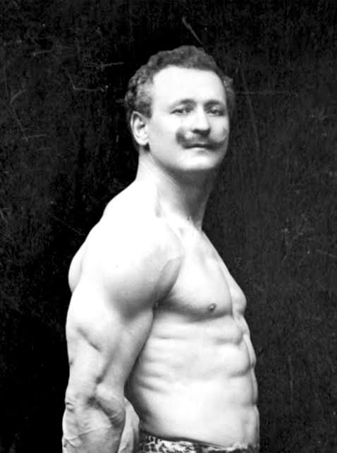

O fisiculturismo é um esporte que tem como objetivo desenvolver a musculatura através de treinamento de força, alimentação e disciplina.

O fisiculturismo moderno começou no final do século XIX com Eugen Sandow, considerado o pai do fisiculturismo. Ele ficou famoso por apresentar seu físico em exposições e competições de força.
Entre as décadas de 1960 e 1970 surgiu a Era de Ouro do fisiculturismo. Nessa época atletas como Arnold Schwarzenegger, Franco Columbu e Frank Zane ajudaram a popularizar o esporte mundialmente.
O Mr. Olympia foi criado em 1965 por Joe Weider e se tornou a maior competição de fisiculturismo do mundo.
O fisiculturismo combina treinamento intenso, dieta rigorosa e descanso. Atualmente existem diversas categorias, como Men's Open, Classic Physique e Men's Physique.